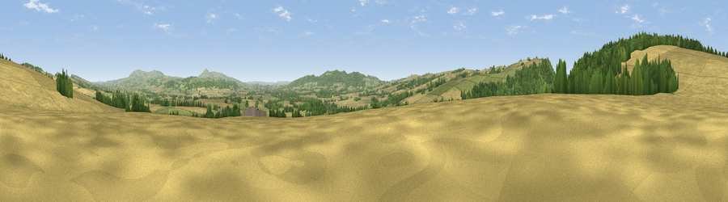

Viewpoint near Stokesay
#16618 in England · top 48% of its area beats it · near StokesayThe view, rendered

A 360° render of this exact spot computed from the terrain model, tree cover and land cover — summer colours, afternoon light, calibrated against photographs of famous viewpoints. Real trees, hedges and buildings will differ in detail.
The panorama
Grey silhouette: terrain skyline in each direction (720 bearings, Earth curvature and refraction included). Dashed green: skyline with trees (+15 m) and buildings (+8 m) as obstacles. Blue strip: how far the ground is visible on each bearing.
Where the view opens
Wedge length = distance to the farthest visible ground on that bearing (vegetation-aware). Rings at 10, 25 and 50 km.
What fills the view
56% cropland · 23% grassland · 21% woodland
Angular shares of the visible panorama (visual magnitude), not map area. Landscape diversity 0.44 (0–1 Shannon).
Key numbers
More beautiful places nearby
The staircase of upgrades: each row has a higher view potential than everything closer. Driving times are estimates from straight-line distance, calibrated against real road routing — check an actual route before setting out.
| Place | Direction | Drive | Score |
|---|---|---|---|
| Viewpoint near Stokesay | W · 2 km | ~6 min | 73.6 |
| Viewpoint near Stokesay | W · 3 km | ~7 min | 75.0 |
| Viewpoint near Halford | NNE · 4 km | ~10 min | 76.2 |
| Burrow | WNW · 7 km | ~15 min | 79.4 |
| Bringewood Hill | SSE · 8 km | ~16 min | 82.2 |
| Viewpoint near Asterton | NW · 10 km | ~19 min | 83.0 |
| Titterstone Clee | ESE · 14 km | ~26 min | 83.8 |
| The Lawley | NNE · 17 km | ~30 min | 85.8 |
52.42355, -2.80839 · source: screening · position refined by local search. Computed location — check access rights before visiting.